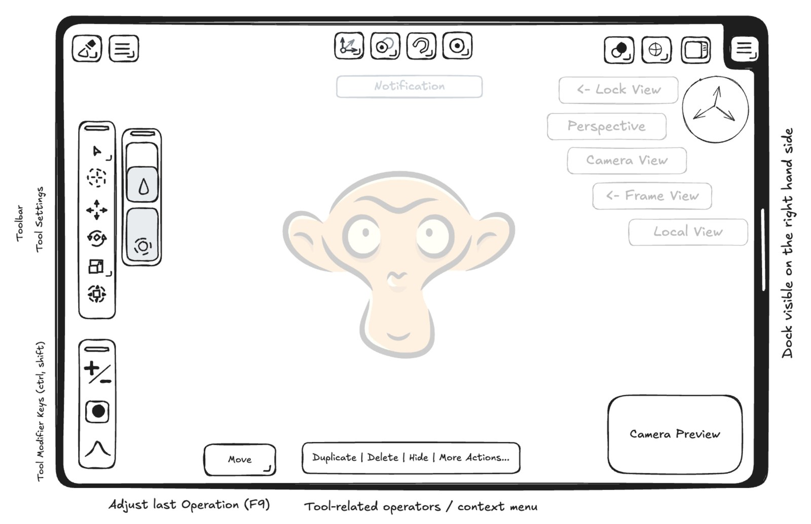

Blender 公布平板版推出路線：先完成基礎平台，再逐步改善觸控工作流
Blender 團隊整理 2026 年十月工作坊的平板開發計畫，先處理平台建置、每日版本與商店測試，再調整觸控介面及跨裝置檔案流程；這是開發路線，並非完整平板版已正式推出。

Blender ★★★★★
完整分析
先接上既有建置流程
計畫先簡化平板版本建置，再整合既有持續建置基礎設施、每日版本及裝置測試。初期要完整使用仍需外接鍵盤、滑鼠或觸控板，完整觸控與手勢支援會在後續推進。
處理桌面與平板的檔案交接
團隊以桌面建模、平板雕刻與貼圖、再回桌面重拓撲及渲染作為使用情境，規劃傳送整份檔案或含依賴的部分資料。這些是希望實作的操作，不是已可直接使用的同步功能。
硬體與發行仍有階段限制
初期資源聚焦高階 Android 平板及近期 iOS 裝置，其他硬體可能有顯示或效能問題。透過商店發布仍須先通過核准，所有工作區也不會一開始就完成平板最佳化。
BRIEF｜來源已驗證；證據深度較有限，完整分析會明確區分已知資訊與待驗證事項。